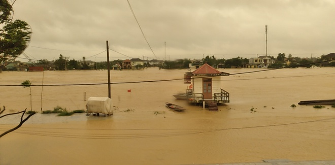

Lũ ở Quảng Trị vượt đỉnh lịch sử năm 1999
Theo Mỹ Hà Chủ nhật, 18/10/2020 06:50 (GMT+7)Rạng sáng 18/10, Trung tâm Dự báo khí tượng thủy văn Quốc gia phát đi bản tin thông báo lũ khẩn cấp trên sông ở Quảng Bình và Quảng Trị.
Theo ông Vũ Đức Long, Phó giám đốc Trung tâm Dự báo khí tượng thủy văn Quốc gia, mực nước trên sông ở hai khu vực này lên nhanh trong đêm. Lúc 1h, lũ trên sông Kiến Giang (Lệ Thủy, Quảng Bình) đạt 3,49 m, trên báo động 3 là 0,79 m.

Theo Trung tâm Dự báo khí tượng thủy văn Quốc gia, ngày 18/10-21/10, mưa lớn tiếp diễn tại các tỉnh từ Hà Tĩnh đến Quảng Trị với lượng phổ biến 400-600 mm, có nơi trên 700 mm. Tại Nghệ An và Thừa Thiên Huế, lượng mưa dao động 150-250 mm, có nơi trên 300 mm. Trong khi đó, mưa ở các tỉnh từ Quảng Ngãi đến Phú Yên phổ biến 80-150 mm, có nơi trên 150 mm. Trước đó, chiều 17/10,địa bàn huyện Hải Lăng, tỉnh Quảng Trị ngập lụt trở lại trên diện rộng, tương đương đỉnh lũ ngày 13/10 vừa qua. Trên toàn huyện, hơn 16.800 hộ gia đình đã ngập sâu 0,2-3,5 m. Toàn bộ hệ thống giao thông các tuyến đường tỉnh, huyện, liên xã trên địa bàn đều bị ngập, chia cắt. Tính đến 14h ngày 17/10, lực lượng chức năng huyện Hải Lăng đã di dời trở lại hơn 1.700 hộ gia đình với 2.500 người từ vùng nguy cơ ngập sâu đến nơi an toàn. Tại Quảng Bình, lũ cũng lên cao trong đêm gây ngập lụt diện rộng. Theo ghi nhận của Zing, nhiều trục đường chính ở huyện Quảng Ninh đã ngập khoảng 1,5 m. Nhiều thôn bản ở vùng trũng ngập trên 2 m. Những người dân trong vùng ngập nặng đã được di dời lên khu vực an toàn từ chiều 17/10.
Tại “rốn lũ” Tân Hóa, đến 16h ngày 17/10, toàn xã đã có trên 300 ngôi nhà ngập sâu, trong đó có nhiều ngôi nhà ngập từ 1,5 đến 2 m, buộc các hộ dân phải dời lên nhà phao sinh sống. Ở các xã biên giới Thượng Hóa, Sơn Hóa, Dân Hóa và Trọng Hóa, nước lũ dâng cao đã cô lập nhiều vùng dân cư. Trong khi đó, xã Trọng Hóa có 4 điểm ngầm trên con đường vào vùng Lòm ngập sâu, khiến 7 bản làng với 420 hộ dân bị chia cắt, cô lập. Tuyến đường vào các bản đã bị chia cắt nhiều đoạn bởi nước từ các khe suối dâng cao. Tại các điểm ngập, chính quyền địa phương và bộ đội biên phòng đã lập rào chắn tạm thời ngăn không cho phương tiện qua lại và tuyên truyền cho bà con không đi xúc cá dọc khe suối để bảo đảm an toàn. Lực lượng chức năng đã phân công cán bộ bám địa bàn, vận động người dân tạm rời những ngôi nhà sàn lên nhà văn hóa cộng đồng và các trường học để trú ẩn cho an toàn.